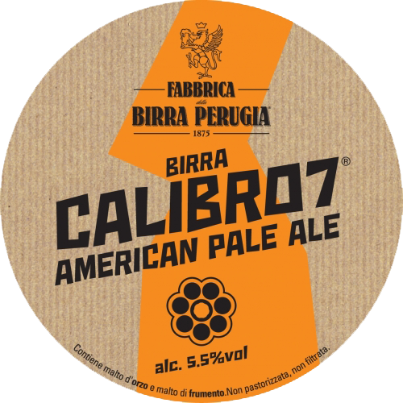

Birre alla Spina
4 Luppoli
Una pregiata lager, dal corpo rotondo generosamente luppolata, caratterizzata dall'uso di una varietà di luppolo coltivato in Italia.
6 Luppoli
Una birra dal gusto di malto tostato con venature di caramello e liquirizia. L'intensità del malto tostato bilancia l'amaro del luppolo per una rosssa corposa dalla spiccata personalità.
Grimbergen Triple
Ricca e speziata, Grimbergen Triple si riconosce dal suo color dorato e dalla sua ricca e densa schiuma. All'olfatto, si possono apprezzare aromi maltati e speziati tra cui spiccano la cannella e il caramello. Al gusto, questa birra strutturata, sviluppa note di miele e vaniglia.
1664 Blanc
La birra 1664 Blanc ha aromi sottili e una bella nebulosità. Prodotta con un leggero tocco francese, 1664 Blanc è una birra di frumento francese premium con un gusto delicato di agrumi e spezie di coriandolo.
Leffe
Delicata ma caratteristica, è la birra da degustazione per eccellenza:regala un tocco di sapore inpiù ai piatti semplici e accompagna con leggerezza anche i tuoi fritti.
Franziskaner
cona dello stile Weiss, Franziskaner è una birra di frumento dal colore biondo e dalla ricca schiuma bianca. I sentori al naso ed al palato sono caratterizzati da note di malto, lievito, grano e sfumature pepate ben in equilibrio con le tipiche note fruttate (banana matura e agrume).
Guinness
Appartiene alla categoria di birre stout, ovvero birre scure ad alta fermentazione prodotte con l'aggiunta di malto d'orzo e orzi tostati. Al gusto è: amarognolo, dal retrogusto tostato, con note di caffè e cacao che anche i non intenditori possono avvertire sul palato.

Calibro 7
La calibro 7 è un'American Pale Ale esuberante e originale, dai forti richiami agrumati e tropicali. Lo stile, la creatività della ricetta e l'importante dry hoppping, che utilizza ben 7 luppoli diversi, scolpiscono una birra dal gusto anticonvenzionale e irriverente.
Mario tra 20 anni
Imperial IPA di carattere e potenza, seppur nel segno dello stile Birra Perugia, sempre attento a equilibrio e bevibilità. Le sensazioni aromatiche spaziano dai frutti tropicali alle resine, attraversate da folate balsamiche che trascinano il sorso verso approdi lontani e imprevedibili.
Birre in bottiglia
Corona
Ichnusa
Uchnusa non filtrata
Tennents